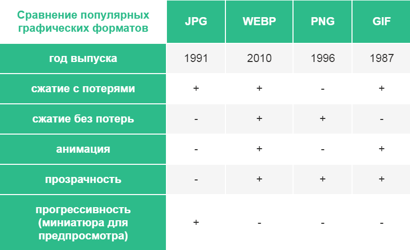
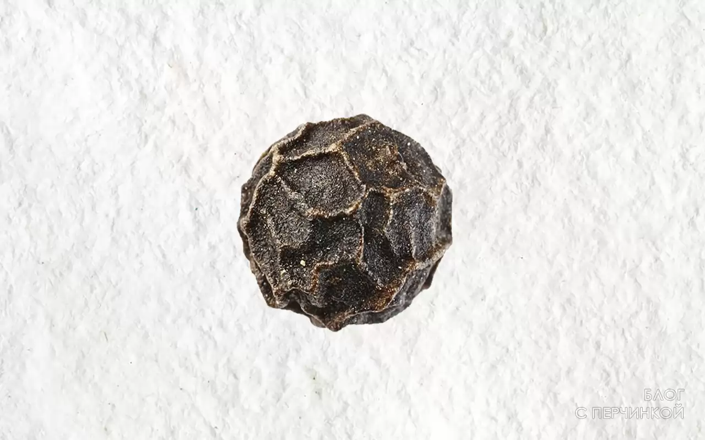
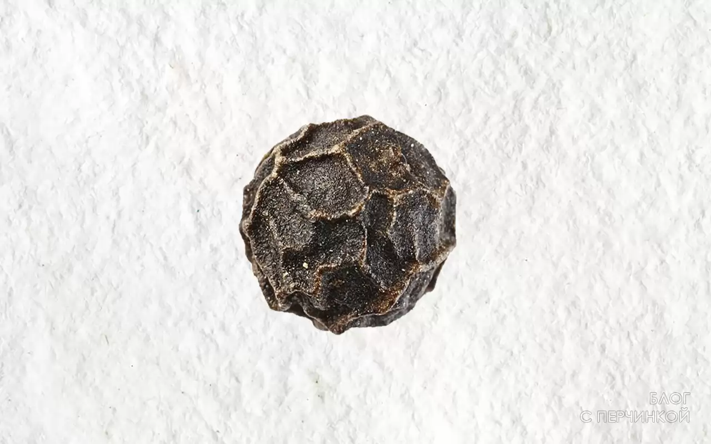
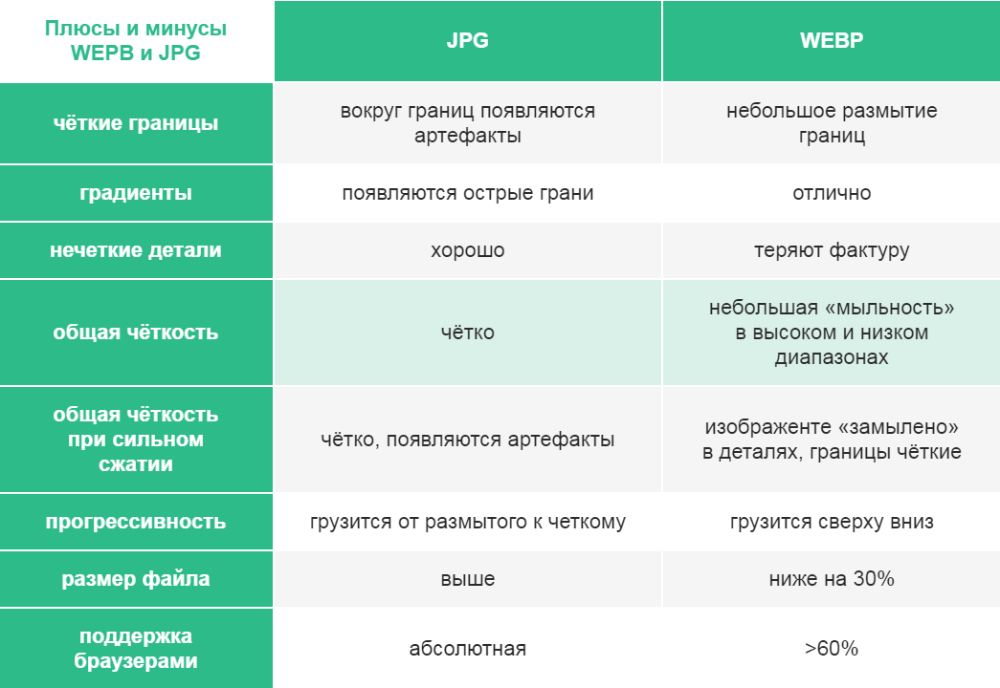

Формат WebP это новый формат изображения от Google, который использует как сжатие с потерями (компромисс между качеством и размером), так и без потерь (снижение размера без компромисса в отношении качества).
Google разрабатывает и формат, и программное обеспечение, связанное с WebP по лицензии BSD. Он был выпущен 30 сентября 2010 года, является открытым форматом и использует расширение файла .webp.
Алгоритм сжатия WebP с потерями использует предиктивное кодирование для прогнозирования значения цветов смежных пикселей. Затем он только кодирует разницу между фактическими значениями и прогнозами. Из этих закодированных или остаточных значений, многие равны нулю, и это явление способствует в дальнейшем уменьшению размера изображения WebP. Таким образом, сжатие с потерями WebP – как JPEG – основано на прогнозировании блока.
Поддержка В настоящее время просмотр изображений в формате WebP поддерживается браузерами Google Chrome (начиная с 9 версии), Opera (начиная с версии 11.10)[9] и Firefox(с версии 65). Начиная с версии 26 также поддерживается браузером Pale Moon. Android поддерживает чтение и запись WebP изображений начиная с версии 4.0. С помощью специальной JavaScript-библиотеки возможно отображение в браузерах, поддерживающих видео в формате WebM, в частности, в Firefox 4.0 и более новых. Существует также порт библиотеки libwebp под названием libwebpjs/libwebpas на JavaScript и ActionScript, позволяющий использовать WebP во всех популярных браузерах (поддержка IE6+ осуществляется с помощью дополнительного модуля Adobe Flash)[15]. Просмотрщик изображений IrfanView при условии установки специального плагина также поддерживает WebP и может преобразовывать его в другие графические форматы. В октябре 2018 поддержка формата была добавлена в Microsoft Edge. Также в октябре 2018, библиотека libwebp была принята в кодовую базу Firefox.
Есть много типов изображений, которые принято использовать в интернете. Три наиболее распространенных варианта — PNG , JPEG (или JPG) и GIF. Хотя эти форматы популярны, каждый из них имеет свои плюсы и минусы:
По данным Google, изображения WebP:

 




Как мы видим из таблицы, WEBP не всегда лучше JPG. Тем не менее, чаще всего выигрывает по размеру и качеству, если не требуется показать мелкие фактурные детали.
1Информация взята с общедоступных ресурсов jcup.ru и developers.google.com